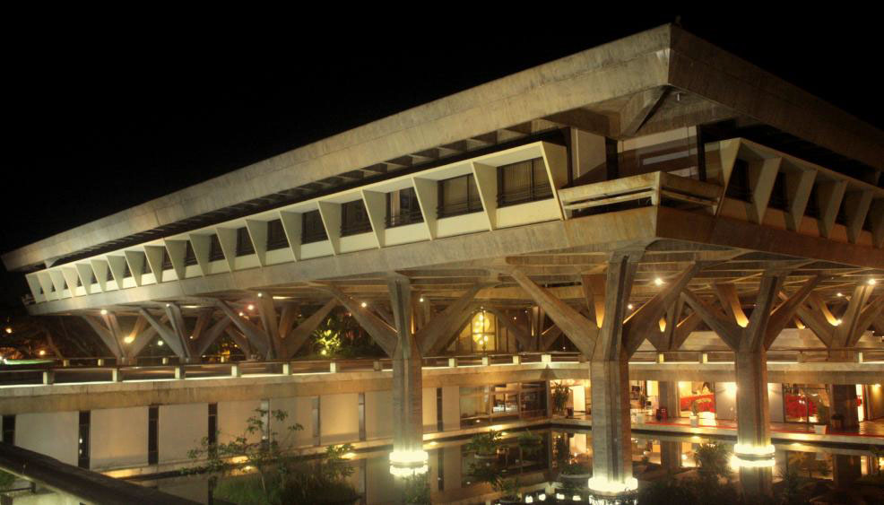
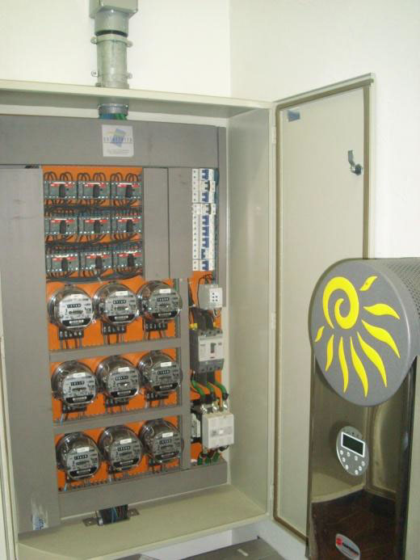
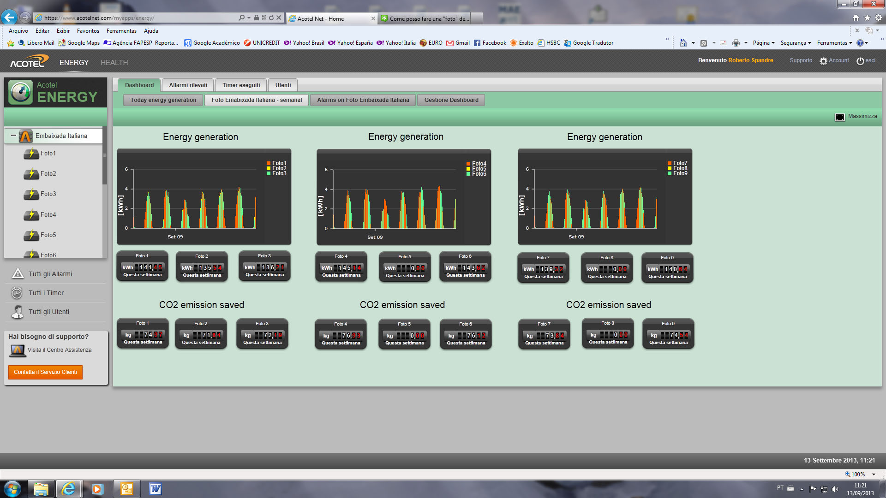

Green Embassy - Italian Embassy

(2015-2016,Laboratory of Renewable Energy Sources,University of Brasilia, Brasilia, Brazil)
The Italian Embassy in Brazil has a program enabling sustainability for energy and water resources. The solar system of the Embassy is the bigger in Brasilia and has 9 groups of panels and can generate up to 17% of the whole energy consumed of the Embassy. My project was to develop a program to analyse the efficiency of the system and identify failures.
Programming Language: MatLAB

Data Acquiring
Collection of generated data from the inversors, consumed data from the energy provider and metereological data

Data Analysis
Development of a program to analyse of the efficiency by month, analysing more than 4 years of data

Results
It was identified a failure in one of the inversors,by changing the inversor 625 kWh mre by month, saving aproximately 3450 BRL by year (862 euros)